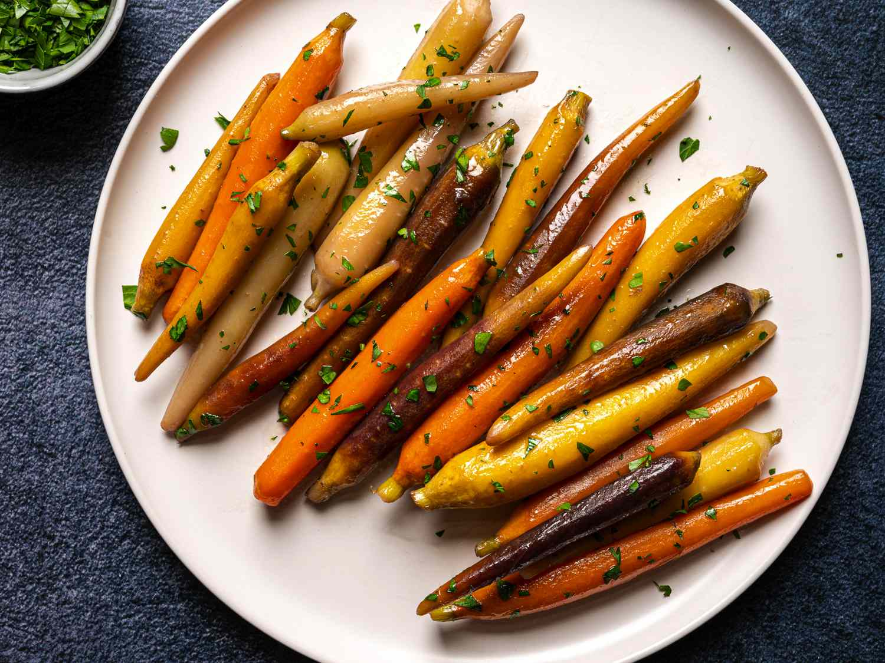

Back to Recipes
Glazed Carrots

Description
Glazed carrots are a versatile and popular choice for fresh produce. They come in various colors and sizes, and are a quick cook making them perfect for quick but still elegant dinner.
Ingredients
- 1 lb Carrots
- As needed, Water, see step 2
- 1 oz Butter
- 0.5 tbsp Sugar
- 0.5 tsp Salt
- to taste --- White pepper
- as needed --- Chopped parsley
Instructions
- Trim, peel, and slice the carrots, as needed
- Place them in a saucepan or straight-sided sauté pan. Add water to barely cover the carrots. Add the butter, sugar, and salt.
- Bring to a boil. Lower heat and simmer until the carrots are tender and the water is nearly evaporated. If done properly, these should happen at the same time.
- Toss the carrots so that they are well coated with the glaze that is left in the pan.
- Garnish with chopped parsley.